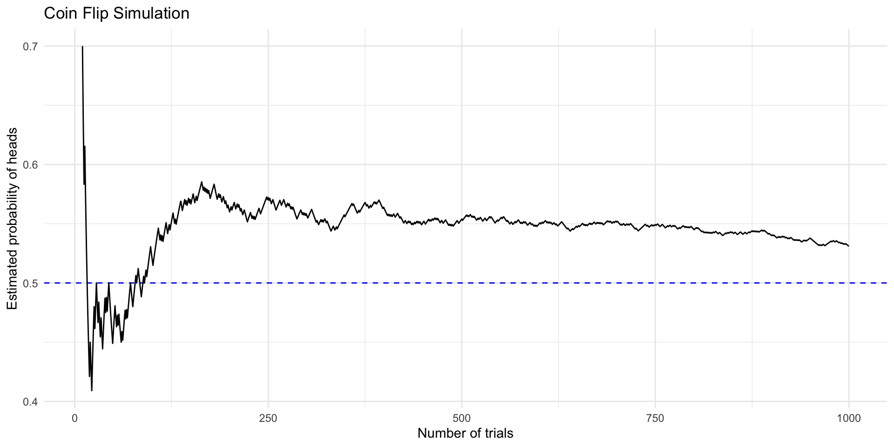

| numSuccesses | Probability | CumulativeProbability |
|---|---|---|
| 0 | 0.0001 | 0.0001 |
| 1 | 0.0027 | 0.0027 |
| 2 | 0.0402 | 0.0430 |
| 3 | 0.2713 | 0.3143 |
| 4 | 0.6857 | 1.0000 |
Sampling, Experiments,
and Probability
Dr Andrew Mitchell ![]()
Lecturer in AI and Machine Learning for Sustainable Construction
2025-01-30
Learning Objectives
After this lecture, you should be able to:
Describe the sample space for a random experiment
Compute relative frequency and empirical probability
Understand probability rules for events and combinations
Explain the law of large numbers
Understand conditional probability and independence
Use Bayes’ theorem for real-world applications
Probability
Introduction
Probability theory is the branch of mathematics that deals with chance and uncertainty. It forms an important part of the foundation for statistics, because it provides us with the mathematical tools to describe uncertain events.
- Historical Origins
- Developed by mathematicians studying gambling
- Key advances from Pascal and Fermat’s correspondence
- Evolved into fundamental tool for statistics
- Modern Applications
- Business decision-making under uncertainty
- Weather forecasting and risk assessment
- Medical diagnosis and testing
- Data analysis and machine learning
What is Probability?
- A number describing the likelihood of an event occurring
- Ranges from 0 (impossibility) to 1 (certainty)
- Sometimes expressed as percentages (0% to 100%)
Examples from everyday life:
- Weather forecast: “20% chance of rain today”
- Sports: Steph Curry’s 91% free throw success rate
- Medical tests: PSA test with 80% sensitivity
Key Terms
Any activity that produces or observes an outcome
- Simple Examples:
- Flipping a coin
- Rolling a die
- Drawing a card
- Real-world Examples:
- Trying a new route to work
- Testing a medical treatment
- Measuring customer satisfaction
Set of all possible outcomes
- Discrete Sets:
- Coin flip: {heads, tails}
- Six-sided die: {1,2,3,4,5,6}
- Card draw: {52 possible cards}
- Continuous Sets:
- Time to work: all real numbers > 0
- Temperature readings
- Stock prices
A subset of the sample space
- Single Events:
- Getting heads in a coin flip
- Rolling a 4 on a die
- Drawing the ace of spades
- Compound Events:
- Rolling an even number
- Drawing a red card
- Arriving at work in under 20 minutes
Formal Properties of Probability
Kolmogorov’s axioms define what makes a value a probability:
- Non-negativity: Probability cannot be negative
- \(\mathrm{P}(E_i) \ge 0\)
- Example: Can’t have -10% chance of rain
- All probabilities must be zero or positive
- Total Probability: All outcomes sum to 1
- \(\sum_{i=1}^N{\mathrm{P}(E_i)} = 1\)
- Example: Rolling a die
- \(\mathrm{P(1) + P(2) + P(3) + P(4) + P(5) + P(6)} = 1\)
- Each P(number) = 1/6, so \(6 \cdot (1/6) = 1\)
- Upper Bound: Individual probability ≤ 1
- \(\mathrm{P}(E_i)\le 1\)
- Follows from rules 1 and 2
- Example: Can’t have 120% chance of success
Why These Rules Matter:
- Ensure mathematical consistency
- Enable probability calculations
- Form foundation for statistics
How Do We Determine Probabilities?
Three main approaches:
Personal Belief
- Based on knowledge and experience
- Example: Bernie Sanders winning 2016 election
- Subjective but sometimes necessary
- Cannot verify through experiments
Empirical Frequency
- Based on actual data collection
- Example: Rain in San Francisco
- 73 rainy days in 2017
- \(\mathrm{P}(\mathrm{rain}) = 73/375\)
- Requires sufficient data
Classical Probability
- Based on equally likely outcomes
- Example: Fair six-sided die
- \(\mathrm{P}(\mathrm{rolling\ a\ }6) = 1/6\)
- Mathematical approach
Probability Distributions: Free Throw Example
Steph Curry’s free throw success in 4 attempts:
- Understanding the Table:
- numSuccesses: Number of successful free throws
- Probability: Chance of exactly that many successes
- CumulativeProbability: Chance of that many or fewer successes
- Key Insights:
- Most likely outcome: 4 successes (0.6853)
- Very unlikely to make 0-2 shots (0.0421)
- Shows why Curry is considered elite
Law of Large Numbers
As we increase the number of trials, our empirical probability approaches the true probability.
- Understanding the Graph:
- Blue line: True probability (0.5)
- Black line: Observed probability
- High variability with small samples
- Converges to true value over time
- The “Law of Small Numbers”:
- Common mistake: treating small samples like large ones
- Term coined by Kahneman and Tversky
- Even trained researchers make this error
- Early results can be misleading
Real-World Example: 2017 Alabama Senate Election
- Early results highly volatile
- Initial large lead for Jones
- Switched to Moore leading
- Finally Jones won
- Perfect illustration of why we need sufficient data
- Applies to:
- Opinion polls
- Medical studies
- Market research
Classical Probability: de Méré’s Problem
A famous gambling problem that helped develop probability theory:
First Game: At least one six in four dice rolls
- de Méré’s calculation: \(4 \cdot \frac{1}{6} = 2/3\)
- Actual probability: \(1 - \left( \frac{5}{6} \right)^4 = 0.517\)
- He made money on this bet!
Second Game: At least one double-six in 24 rolls of two dice
- de Méré’s calculation: \(24 \cdot \frac{1}{36} = 2/3\)
- Actual probability: \(1 - \left( \frac{35}{36} \right)^{24} = 0.491\)
- He lost money on this bet
de Méré’s Problem: Visual Analysis

- Matrix shows all possible outcomes of two dice throws
- Red cells: Getting a six on either throw
- Blue cells: No sixes
- White cell (6,6): Double six counted only once
- Shows why simple addition is wrong
Conditional Probability
The probability of an event occurring, given that another event has occurred.
- Formula: \(P(A|B) = \frac{P(A \cap B)}{P(B)}\)
- \(P(A|B)\) reads as “probability of A given B”
- \(P(A \cap B)\) is the joint probability
- \(P(B)\) is the overall probability of B
- Visual Representation:
- Total population splits into groups (e.g., voters by party)
- Each group further splits by outcome (e.g., voting choice)
- Conditional probability focuses on one branch
Health Data Example
NHANES data on physical activity and diabetes:
| Diabetes | PhysActive | n | prob |
|---|---|---|---|
| No | No | 2123 | 0.3900423 |
| No | Yes | 2770 | 0.5089105 |
| Yes | No | 349 | 0.0641191 |
| Yes | Yes | 201 | 0.0369282 |
- Understanding the Data:
- Joint probabilities show overlap between conditions
- Can calculate: \(P(diabetes|inactive)\)
- Shows real-world health relationships
- Key Insights:
- Physical activity associated with lower diabetes risk
- Example of how conditional probability informs health research
- Useful for public health recommendations
Independence
Two events are independent if:
\(P(A|B) = P(A)\)
Example 1: Political Independence
- California vs proposed state of Jefferson
- \(P(Jeffersonian) = 0.014\)
- \(P(Californian) = 0.986\)
- Not independent: If you’re Jeffersonian, you can’t be Californian!
Independence: Health Example
NHANES data on physical activity and mental health:
| PhysActive | Bad Mental Health | Good Mental Health | Total |
|---|---|---|---|
| No | 629 | 2510 | 3139 |
| Yes | 471 | 3095 | 3566 |
| Total | 1100 | 5605 | 6705 |
- Testing Independence:
- Compare \(P(bad\ mental\ health|active)\) vs \(P(bad\ mental\ health)\)
- If equal, variables would be independent
- Data shows they are not independent
- Physical and mental health are related
Bayes’ Rule
A powerful tool for updating probabilities based on new evidence:
Basic Form: \(P(B|A) = \frac{P(A|B) \cdot P(B)}{P(A)}\)
Expanded Form: \(P(B|A) = \frac{P(A|B) \cdot P(B)}{P(A|B) \cdot P(B) + P(A|\neg B) \cdot P(\neg B)}\)
Components:
- \(P(B|A)\) = Updated probability (posterior)
- \(P(A|B)\) = Likelihood of evidence
- \(P(B)\) = Initial probability (prior)
- \(P(A)\) = Overall probability of evidence
Medical Screening Example: PSA Test
- Given:
- Sensitivity = \(P(positive|cancer) = 0.8\)
- Specificity = \(P(negative|no\ cancer) = 0.7\)
- Base rate = \(P(cancer) = 0.058\)
- Calculation:
- \(P(cancer|positive) = \frac{0.8 \cdot 0.058}{0.8 \cdot 0.058 + 0.3 \cdot 0.942}\)
- \(= 0.14\) (only 14% chance of cancer)
- Shows importance of considering base rates!
Odds and Odds Ratios
Converting between probability and odds:
- Formulas:
- Odds = \(\frac{P(event)}{P(not\ event)}\)
- Probability = \(\frac{odds}{1 + odds}\)
- Odds Ratio = \(\frac{posterior\ odds}{prior\ odds}\)
- PSA Test Example Calculations:
- Prior odds = \(\frac{0.058}{1-0.058} = 0.061\)
- Posterior odds = \(\frac{0.14}{1-0.14} = 0.16\)
- Odds ratio = \(\frac{0.16}{0.061} = 2.62\)
Interpreting Results:
- Prior odds: 1:16 chance of cancer before test
- Posterior odds: 1:6 chance after positive test
- Odds ratio of 2.62 means:
- Risk increased 2.62 times
- But absolute risk still low (14%)
- Shows why screening rare conditions is problematic
Summary
- Probability quantifies uncertainty
- Three ways to determine probabilities
- Conditional probability for related events
- Bayes’ rule for updating beliefs
- Importance of base rates
Questions?
Thank you for your attention!
Poldrack, Russell A. 2023. Statistical Thinking. Analyzing Data in an Uncertain World. Princeton: Princeton University Press. https://statsthinking21.github.io/statsthinking21-core-site/.